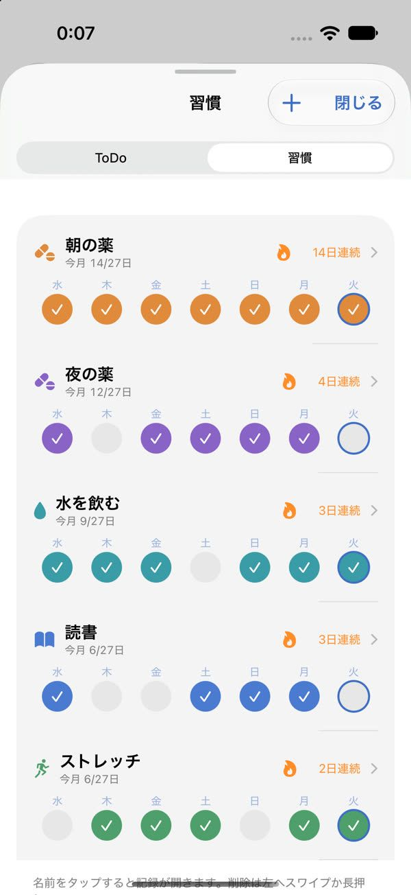

07:30 · Morning
今日の予定と ToDo をひと目で
ウィジェットの 2 週間カレンダーと、Siri の「今日をまとめて」。家を出る前に 1 日の流れがわかります。
予定、ToDo、手書きメモ、日記、会議の文字起こし、天気まで。これ 1 つで全部そろう、オールインワンの手帳アプリです。いくつものアプリを行き来しなくていい、かゆいところに手が届く 1 冊を。


Try it
Daystitch の ToDo を、ブラウザでそのまま試せます。丸をタップして完了、終わったものは「完了」タブにまとまります。ToDo の中のチェックリストや、毎週の繰り返しも。下の丸で着せ替えも変えてみてください。
※ アプリの ToDo 画面をもとにした体験用の見本です。実際の画面とは細部が異なります。入力した内容は保存されません。
Why Daystitch
予定と ToDo だけなら、どのアプリでもできます。Daystitch が力を入れたのは、その日の記録を「残す・探す・続ける」こと。5 つのちがいを、実際の画面と見本でどうぞ。
01 · Day page
日のページには、予定も ToDo も手書きも、会議の議事録も写真もいっしょに。天気と気分も自動で並ぶので、あとから見返したとき「あの日」がそのまま残っています。
02 · Search
検索窓にひとこと入れるだけで、予定・ToDo（中のチェック項目まで）・手書きの文字・貼った文章・録音の文字起こし全文まで、まとめて探します。手書きの文字は端末の中で読み取るので、外に送られません。
見本のデータで検索を試せます（アプリの検索と同じ範囲を探します）
03 · Habits
習慣は 1 タップで記録。「朝の薬」「夜の薬」のように分けておけば、飲んだかどうか迷いません。いまの連続日数・最長記録・30 日間の達成率が見えるから、続けるのが楽しくなります。ホーム画面のウィジェットからも、アプリを開かずに記録できます。

右の数字は表示の例です
04 · Weather
カレンダーには 10 日先までの天気と最高／最低気温。そして過去の日も、2021 年 8 月以降ならその日の天気が表示されます。日記を見返すと「この日は雨だったな」まで思い出せる手帳です。地域は現在地か、47 都道府県から選べます。
雨 14° / 9°
「傘を忘れて駅まで走った。でも企画は通った！」
天気・気温は表示の例です（天気データ： Weather）
05 · Meeting
議事録を作るアプリはほかにもあります。Daystitch の違いは、そのあと。議事録はその日のページに残り、「やること」は ToDo へ、文字起こしの全文は検索の対象に。会議が手帳の中で続いていきます。
録音する
日のページの 🎙 から。録音しながらメモも書けます
自動で文字起こし 端末の中で
00:02 では、来月の企画案から確認します。
00:31 見積もりは金曜までに送りましょう。
止めるだけで始まります。1 時間の会議も OK
AI が要点にまとめる
・発売日は 12 月 5 日に決定
・SNS 広告を先行して実施
・予算は前回比 10% 増で承認
長い会議は区切って読み、最後にまとめ直します
議事録の形に
【日時】15:00〜16:00
【決定事項】発売日 12/5、SNS 広告を先行
【次回】11/2 進捗確認
「要点・議事録・全文」をタブで切り替え
手帳の中で、続きへ
内容は表示の例です。音声は端末の中に残り、文字起こし・要点・議事録は iCloud で iPhone と iPad に同期されます。
| よくある手帳アプリ | Daystitch | |
|---|---|---|
| 日のページ | 予定と文字のメモが中心 | 手書き・写真・スタンプ・録音の議事録まで 1 ページに |
| 検索 | 打ち込んだ文字だけ | 手書きの文字・録音の全文・チェック項目までまとめて |
| 習慣・お薬 | 別の習慣アプリが必要なことも | 手帳の中で記録。連続日数・最長記録・達成率 |
| 天気 | 出ないか、数日先の予報まで | 10 日先の予報＋過去の日の天気も残る |
| 会議 | 録音・議事録は別のアプリ。手帳へは書き写す | 録音 → 文字起こし → 要点 → 議事録 → 日のページ・ToDo・検索へ |
| 日本の暦 | 祝日まで | 祝日・振替休日・六曜（大安・仏滅など） |
※「よくある手帳アプリ」は一般的な傾向をまとめたもので、特定の製品を指すものではありません。
All in one
カレンダー、ToDo、メモ、録音、天気。ふだん別々のアプリでやっていたことが、Daystitch（デイステッチ）1 つで片づきます。
A day with Daystitch
予定を確かめる朝、会議の多い昼、ふり返る夜。どの時間も、同じ手帳の中で続いていきます。
07:30 · Morning
ウィジェットの 2 週間カレンダーと、Siri の「今日をまとめて」。家を出る前に 1 日の流れがわかります。

14:00 · Meeting
会議が終わるころには、要点と「やること」がまとまって手帳に。やることは ToDo へ送れます。

21:00 · Evening
写真やスタンプを貼って、自分だけのページに。AI が書き出しのヒントもくれます。
Features
画像はすべて開発中のアプリの実際の画面です。表示は端末・設定・OS のバージョンによって変わることがあります。
01 · Meeting notes
日のページで録音ボタンを押すだけ。止めると自動で文字に起こし、AI が「要点・決まったこと・やること」にまとめます。長い会議も区切って読み取ります。
02 · To-Do
「今日・明日以降・いつか」の 3 つに分けるだけ。行をタップすればその場でメモやチェックリストを書けて、終わったものは「完了」に日付ごとにたまっていきます。締め切りが来たものは、赤い旗で自動的に「今日」へ。
03 · Calendar
年・月・週・日の 4 つの表示。日本の祝日と六曜（大安・仏滅など）、天気もいっしょに。iPhone のカレンダー（Google・Outlook の予定も）を重ねて見られます。

04 · Handwriting
Apple Pencil や指で自由に。下まで書き進めるとページが広がり、消しゴムは「なぞった所だけ」と「線ごと」を切り替え。写真・スタンプ・マスキングテープも貼れて、手書きの文字はあとから検索できます。
05 · Apple Intelligence & Siri
Apple Intelligence で、話し言葉から予定や ToDo を作成。今日のブリーフィング、週のふり返り、大きな ToDo の分解、空き時間への割り当て、AI で描いた絵を日記に。Apple Intelligence なら追加料金なし、端末の中で処理されます。ChatGPT や Gemini に切り替えることもできます。
※ Apple Intelligence の機能は対応端末（iPhone 15 Pro 以降、M1 以降の iPad、iPad mini（A17 Pro））と iOS 26 以降が必要です。Siri への話しかけは会話の例です。
06 · Apple Watch
Apple Watch で予定を確認して、ToDo をタップで完了。音声で ToDo を追加すれば、iPhone の手帳にもすぐ反映されます。文字盤には次の予定と残りの件数を。


And more
Price
すべての機能を 1 週間お試しいただけます。期間内に解約すれば料金はかかりません。
発売記念価格 · 2027年2月28日までのご登録
¥1,500 / 年
または ¥200 / 月